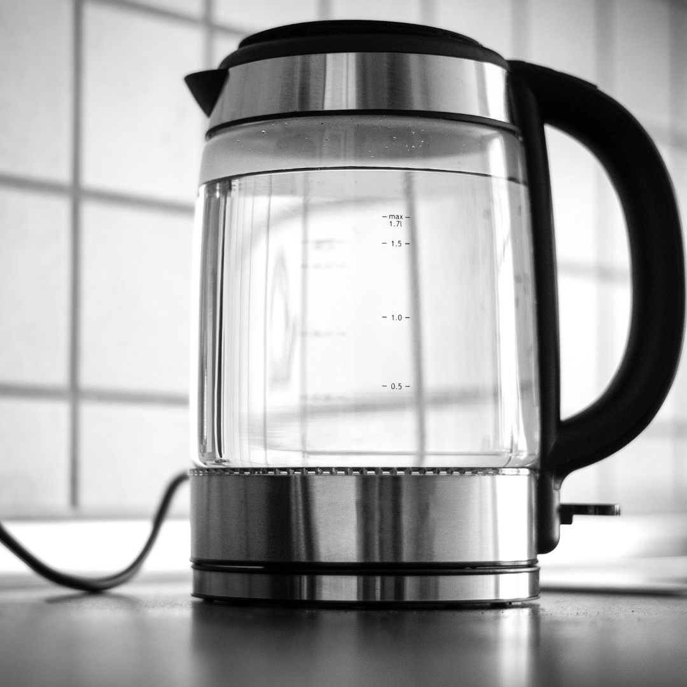
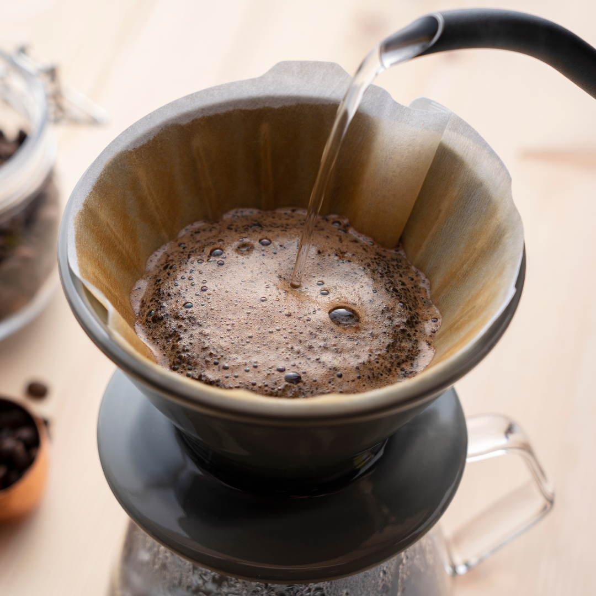

Equipment Essentials
Essential Brewing Equipment
Here are some recommended equipment for various brewing methods.
Essential Tools for Coffee Brewing
Grinder
A grinder is crucial for freshly grinding your coffee beans to the right consistency for each brewing method. Different grind sizes are needed for French Press, Pour-over, and AeroPress.
Scale
A scale helps you measure your coffee and water accurately, ensuring a consistent brew every time.
Kettle
A kettle is essential for at-home coffee methods.
Equipment for Different Brewing Methods
AeroPress

The AeroPress is known for its versatility and portability, allowing you to brew coffee quickly with minimal cleanup.
French Press

The French Press allows for full immersion brewing, resulting in a rich and full-bodied cup of coffee.
Pour-over
The pour-over method provides control over the brewing time and temperature, creating a clean and bright cup of coffee.
Where to Buy Coffee Equipment Near CSUMB
Explore local stores near CSUMB that sell coffee equipment. Click on the map below to find locations.